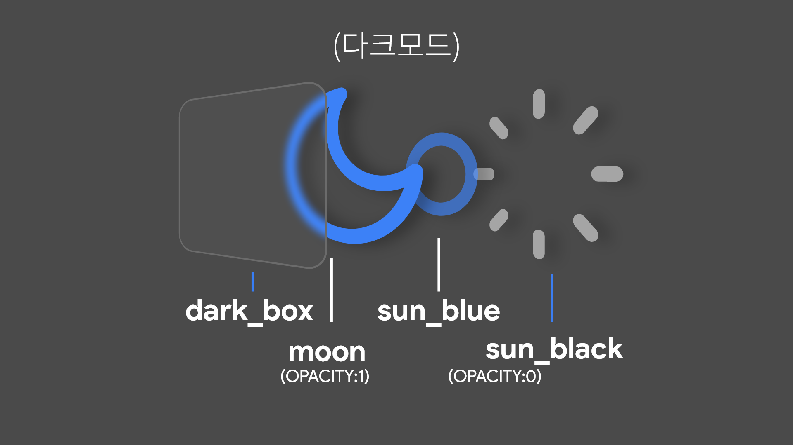
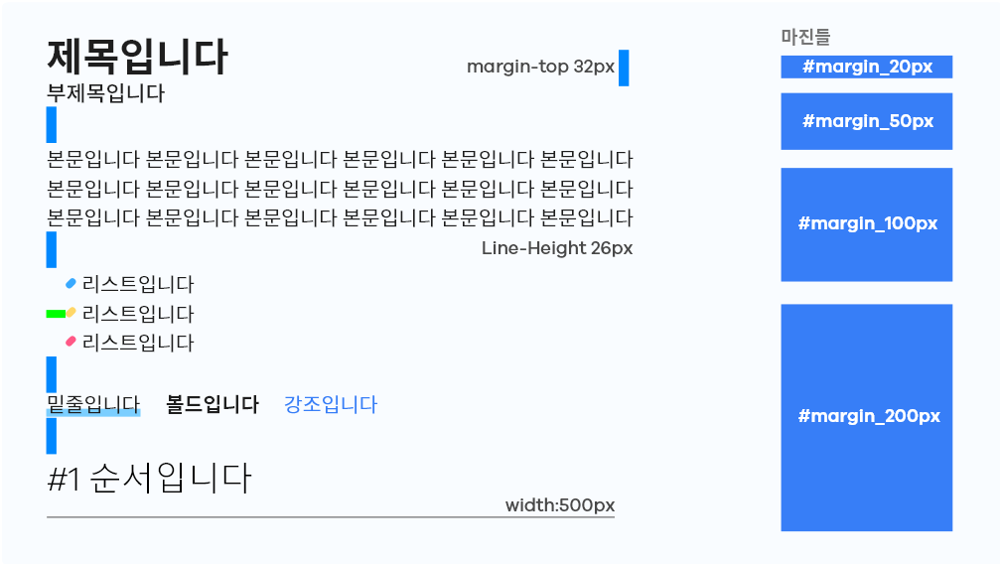

시작
제작로그를 만든이유
이 블로그는 네이버 블로그, 티스토리 등의 서비스형 블로그와 달리
제가 직접 만들었기 때문에 당연하게도 여러 가지 문제들과 마주쳤습니다,
블로그 제작 로그를 작성함으로써 마주친 문제들에 대한 오답 노트가 만들어지게 되고
따라서 같은 실수를 반복하지 않을 것을 기대할 수 있습니다.
블로그를 직접 만든 이유💻
인터넷에 블로그 만들기를 검색하면 여러가지 블로그 서비스가 있습니다
하지만 제가 굳이 블로그사이트를 직접 만든 이유는...
- 원하는 기능들을 내마음대로 넣을수있다.
- 코딩연습을 할 수 있다(중요).
- 블로그서비스 운영경험을 해볼수 있다.
최적화 할 수 있을까?
백드롭필터
사이트의 메인페이지와 카테고리별 글 선택페이지에는
모서리가 둥근 링크 박스가 있습니다, 이박스들에는 블러 효과가 적용되어 있습니다
그런데 메인페이지의 박스들과는 다르게 카테고리별 글 선택페이지의 박스들은
블러처리 범위가 넓어서 그런지 성능에 큰 악영향을 미치는 것을 발견했습니다.
카테고리 페이지의 박스는 맨 하단의 img_box, 블러 처리 역할의 blur_box, 최상단의 text_box
로 이루어져 있는데요, 중간의 blur_box의 backdrop-filter가 이 문제의 범인인것을 확인했습니다.
해결
이 문제를 해결한 방법은 blur_box의 backdrop-filter대신
img_box에다가 filter를 적용하여 이미지를 블러처리하고
삐져나온 img_box를 blur_box의 overflow: hidden 으로 잘라내어
성능에 끼치는 영향은 줄이고 모양새는 큰 차이가 없게 만들었습니다.
수정전 HTML코드
1 2 3 4 5 6 | <a href="#" class="box_blur"> <h1>웹코딩<br>시작하기</h1> <p>이곳에다가<br>2줄정도의 짧은 설명 들어감.</p> <time datetime="2021-12-21T00:00:00.000Z" class="year">2021-12-21</time> </a> <div class="box_img"></div> | cs |
img_box 가 blur_box 밖에서 백드롭필터의 영향을 받습니다.
수정후 HTML코드
1 2 3 4 5 6 | <a href="#" class="box_blur"> <h1>웹코딩<br>시작하기</h1> <p>이곳에다가<br>2줄정도의 짧은 설명 들어감.</p> <time datetime="2021-12-21T00:00:00.000Z" class="year">2021-12-21</time> <div class="box_img"></div> </a> | cs |
img_box 가 blur_box 안에서 overflow: hidden 에 의해 blur_box의 모양으로 잘립니다.
이번의 방법말고도 다른 해결방법이 있는지 생각 해봐야 겠습니다.
다크모드?
만드는 방법은?
원래의 SWBlog제작 계획엔 다크모드가 없었습니다,
그러나 블로그를 만들면서 다크모드가 없으니 눈이 아프기 때문에
다크모드의 구현을 고려해보게 되었습니다.
#1_다크모드의 개념
다크모드란 하얀 바탕에 검은 글씨 대신,
검은 바탕에 하얀 글씨를 나타내는 테마입니다.
다크모드를 사용함으로서 얻는 장단점으로는
- 장점
- 눈의 피로가 줄어든다.
- OLED패널에서 전력소모를 줄인다.
- 시인성을 강화할 수 있다.
- 단점
- 가독성이 저하된다.
- LCD패널에서 빛샘 현상이 나타날수 있다.
현재 거의 대부분의 프로그램, 사이트 에서 다크모드를
지원하고 있기때문에 다크모드는 거의 필수인듯 합니다.
#2_다크모드 구현
다크모드 구현을 위해 라이트모드의css, 다크모드의 css
를 따로 구성한뒤 버튼이나 시스템 기본설정을 읽어와서
유동적으로 스타일을 바꿔야 합니다.
이 외에도 여러가지 방법으로 다크모드를 구현할수 있겠지만
저는 초보 개발자 이기 때문에 모든 엘리먼트의 css를 수정했습니다.

디폴트상태(라이트모드) 의 css선택자에다가
.dark를 덧붙여서 다크모드 실행 >>> .dark 클래스 추가
의 방식으로 다크모드를 구현할 수 있었습니다.
이 방식의 치명적인 단점이라면 새로운 클래스를 만들었다 하면
일일히 다크모드를 적용 해줘야 하기 때문에
상당히 번거롭습니다😓
#3_다크모드 실행조건
저는 다크모드 실행 조건을
- 시스템 테마가 다크모드인가?
- 다크모드 실행 버튼을 클릭했나?
로 정했습니다.
첫번째 "시스템 테마가 다크모드인가?" 는
아주 간단하게 구현할 수 있었습니다
새로 추가된 미디어쿼리인 "prefers-color-scheme"를
사용합니다.
1 2 3 4 5 6 7 8 | if (window.matchMedia("(prefers-color-scheme: dark)").matches) { console.log("DarkMode_prefer!") var sections = document.querySelectorAll("css 선택자"); for( var i = 0; i < sections.length; i++ ){ var item = sections.item(i); item.classList.toggle("dark"); } } | cs |
먼저 운영체제의 테마가 다크모드인지 확인하고
다크모드가 맞다면 for문을 이용해 모든 엘리먼트에
.dark클래스를 추가하여 다크모드를 실행합니다.
자동으로 다크모드 실행을 구현했으니
다크모드 실행 버튼도 만들었습니다.
다크모드 버튼의 구현은 훨신 간단했습니다, 위의 코드를 그대로 복사하여
함수를 만들고, 버튼을 누를때마다 함수를 호출합니다.
1 | <div onclick="dark();" class="dark_box"> | cs |
#4_다크모드 버튼 애니메이션
개인적으로 애니메이션은 다다익선 이라 생각하므로
이 작은 다크모드 버튼에도 애니메이션을 넣기로 했습니다.
먼저, 애니메이션을 구상하고 에프터이펙트에서 간단히
구현했습니다.
이 애니메이션을 웹에서 구현하기 위해
이미지를 3개로 나누어 각각 transform을 이용해
애니메이션을 구현했습니다
라이트모드 에서의 버튼 구조 입니다
다크모드 에서의 버튼 구조 입니다
다크모드,라이트모드 상태의 버튼을 각각
만들어두고, 버튼을 누를때마다 버튼의 스타일이
변하게됩니다.
이미지,텍스트의 규격화
극강의 편안함!
#1_왜 만들었나?
블로그를 만들면서 글을 쓸때마다
새로운 스타일을 적용하면 나중에 상당히 복잡하고 어지러워질 것이므로
특별한 경우가 아니라면 거의 비슷하게 쓰이는 이미지와
텍스트를 규격화하여 작성을 용이하게 했습니다
#2_텍스트 스타일
#텍스트
텍스트의 스타일은 h1, h2, h3, p, li에
각각의 스타일을 적용하여 html에서 태그를 사용하면
별도의 과정없이 바로 폰트 크기,굵기가 적용되게 만들었습니다.
또 밑줄, 볼드, 강조는 span속에 텍스트를 넣어서 id를 부여해 스타일을 적용 시켰습니다.
#마진
마진값 또한 따로 적용시키는것 대신 id를 부여해 바로 적용시킬수 있게 했습니다
총 4가지의 높이를 만들었으며 적절한 상황에 사용합니다.
#3_이미지 스타일

#이미지
이미지의 스타일은 스타일 종류 4개중
하나를 적절히 선택하여 이미지태그에 클래스를 적용하여 사용합니다.
모든 이미지 스타일은 마우스를 호버했을때 크기가 커지거나 모서리 원형률이 줄여
이미지를 더욱 보기 편하게 만들었습니다.
#BIG
컨테이너의 width를 가득 채우는 가장 큰 이미지입니다,
프로젝트의 목표 비주얼 등을 배치합니다.
#SIDE
컨테이너의 절반정도를 채우는 이미지입니다,
설명,구조를 설명하기위해 만들었습니다.
#TRANSITION
비슷한 형태의 이미지3개를 가로로 나열합니다,
콘텐츠의 변천을 나타내기위해 만들었습니다.
#MINI
트렌지션과 달리 전혀다른 이미지3개를 세로로 나열합니다.